Jean Millot
Compositeur - Musicien
A propos

J'ai longtemps été habité par un dilemme. Créativité et rationalité. Comment faire cohabiter ces deux facettes de moi-même ? Je suis attiré par les technologies, l'abstraction, la complexité. Ma curiosité est un moteur qui m'anime, parfois à l'excès. Et je suis aussi sensible à la musique, inexplicable et qui pourtant m'est indispensable. J'ai donc longtemps cru qu'inexorablement je serai amené à faire un choix dans ma carrière et à favoriser une de ces deux facettes. Il aura fallu du temps et des rencontres pour que je comprenne que cette contradiction était loin d'être un problème et qu'au contraire ce va-et-vient entre la science et la musique était une dynamique fertile chez moi.
Au début de ma carrière professionnelle, je fais plutôt le choix de l'ingénierie tout en continuant de pratiquer la musique. Je me rends pour autant compte rapidement que cela ne me suffit pas. En 2016, Je commence à travailler comme ingénieure de recherche dans un laboratoire d'informatique musicale, le CICM, sous la direction d'Alain Bonardi. Je fait alors la découverte de la musique mixte qui mêle électronique et musique instrumentale et je commence à comprendre alors qu'il existe des pratiques musicales dans lesquelles la science et la création sont complémentaires. Je découvre également le métier du Réalisateur en Informatique Musicale (RIM) qui joue un rôle clé dans la réalisation de projets musicaux nécessitant des technologies avancées. Quelques années plus tard, en 2019, alors en pleine crise du Covid-19, je décide de tirer profit de ce moment particulier pour suivre une formation de Réalisateur en Informatique Musicale. Je poursuis donc une master de création contemporaine à l'université Jean-Monnet et sous la direction de Laurent Pottier, je découvre des techniques complexes de composition électro-acoustique. Je suis également, en parallèle du master, des études de composition instrumentale au conservatoire Massenet dans la classe de Pascale Jakubowski et écris mes premières pièces mixtes. Plus tard, je travaille un temps à l'IRCAM en tant que RIM ou je réalise des restaurations de pièces mixtes afin qu'elles puissent être produites en concert. Serge Lemouton qui m'encadre à l'époque m'encourage à continuer dans cette voie. En 2022, lorsque j'arrive à Marseille, je frappe donc à la porte du GMEM, centre national de création musicale. Christian Sébille, son directeur, me tend alors la main et me donne l'opportunité de travailler sur différents projets. Entre autre, je travaille avec l'ensemble C Barré pour lequel je créée l'électronique de Songs And Voices, pièce pour ensemble et électronique composée par Francesca Verunelli et qui sera par la suite représentée à de nombreuses reprises en France et en Europe.
Et maintenant… Que faire après avoir eu tant de chance tout au long de mon parcours ? Continuer à pratiquer inlassablement dans la joie sans aucun doute. Continuer de mettre mon esprit à la tâche et aider les compositeurs et musiciens à réaliser des projets de créations nécessitant l'aide d'un musicien ingénieur. Développer ma sensibilité à travers de nouveaux projets personnelles de compositions. Et tel l'instrumentiste jouant ses gammes, pratiquer jour après jour les outils de composition électro-acoustique.
Projets
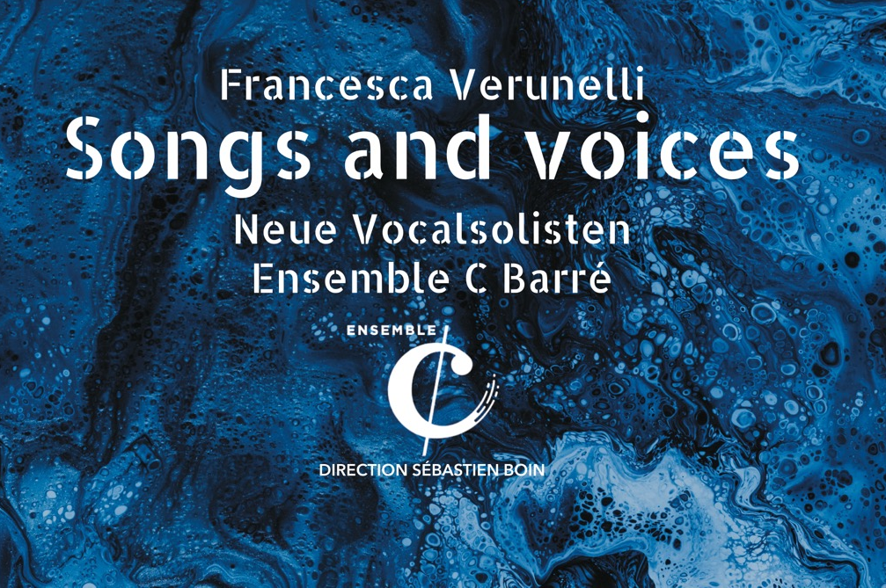
Songs And Voices
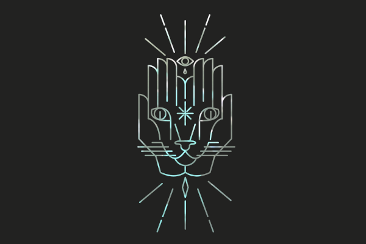
Specimen Vibrations
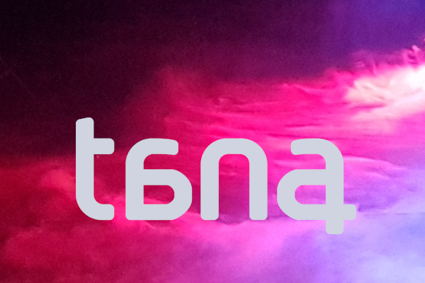
Leading Lines
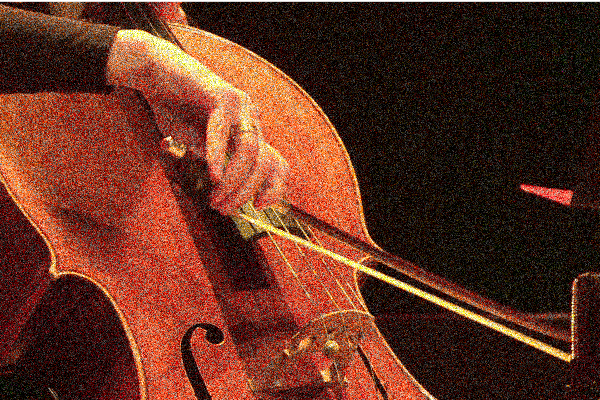
Anima
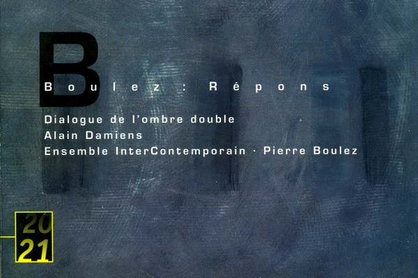
Dialogue de l'ombre double
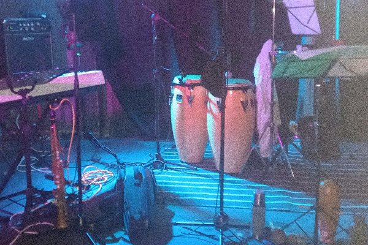
Los Gabianos
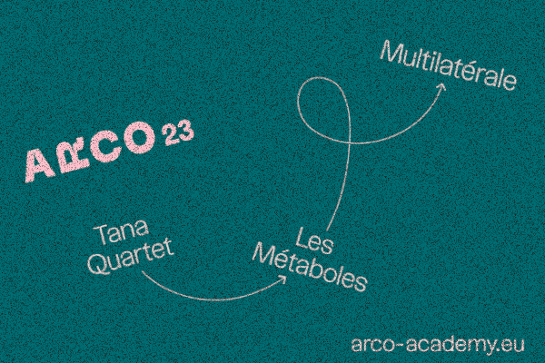
Weightless
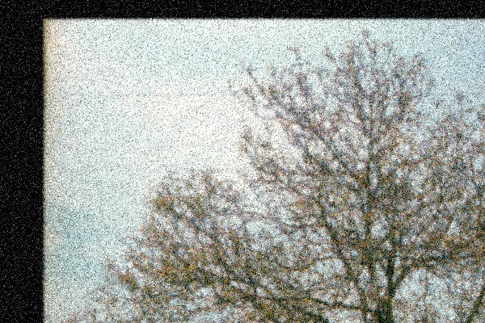
Chant d'aubes | Xi Ling
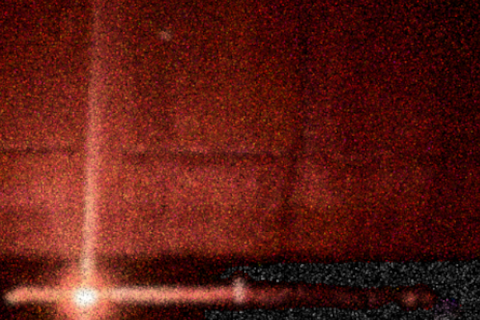
Bodhicitta
Médias
Anima
En 2021, je compose Anima une pièce pour violoncelle et électronique dans le cadre du master Réalisateur en Informatique Musical à l'université Jean Monnet. Lila Jeunet et moi-même interprétons cette pièce en février 2021.
Live Techno
En 2019, je crée un live électronique que je joue cette même année au festival Coucool. Vous pouvez écouter ici un condensé de ce live réalisé à partir de différents extraits de ma performance.
A venir
En 2026, je construis chez moi un home studio équipé pour d'une quadriphonie. J'y prépare actuellement une pièce spatialisée qui sera bientôt disponible à l'écoute sur mon site. Je vous propose d'écouter le début de cette création en version binaurale.
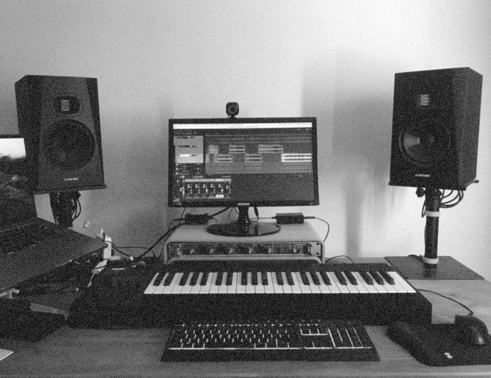
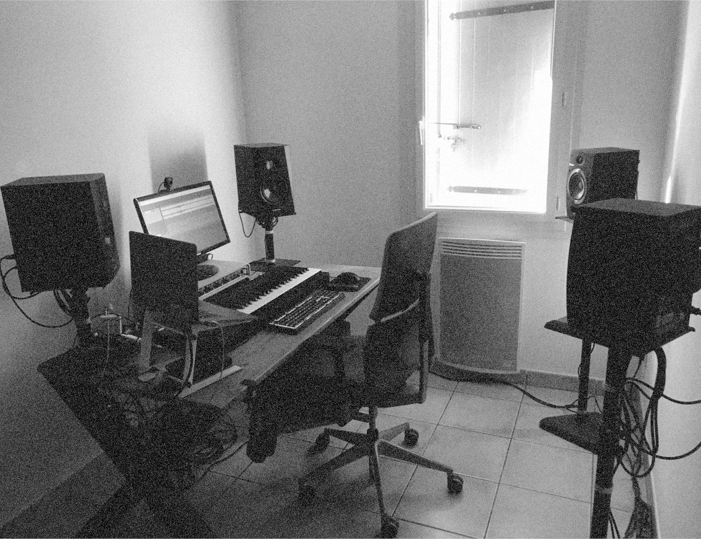